4 Tampilan gambar
Selanjutnya kita akan membahas segi statis gambar, yaitu tampilan. Anda bisa
mengatur kontras, pencahayaan, transparansi, warna bahkan Anda bisa
menambahkan teks ke gambar tersebut yang bisa diedit dan akan mengikuti
kemanapun gambar dipindahkan.
4.1 Mengatur kontras dan pencahayaan
Untuk mengatur kontras kita cukup menggunakan dua tombol, yaitu More Contrast
(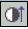 ) untuk menaikkan kontras dan Less Contrast (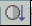 ) untuk menurunkan
kontras.
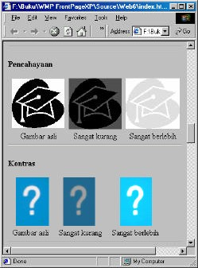
Gambar 7.29 Contoh pengaturan kontras dan pencahayaan
Sedangkan untuk mengatur pencahayaan, tombol yang disediakan adalah More
Brightness (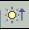 ) untuk menaikkan pencahayaan dan Less Brightness ( 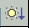) untuk
menurunkan pencahayaan.
4.2 Mengatur transparansi
Sebuah gambar transparan adalah gambar dengan warna latar terlihat pada bagian
kosong gambar tersebut. Dengan kata lain latar belakang halaman akan melatari
gambar tersebut.
Jika Anda ingin membuat sebuah gambar transparan, tutup kotak dialog ini, klik
tombol Set Transparent Color ( ) pada toolbar Picture , lalu klik bagian gambar
yang Anda inginkan.
Perhatikan Gambar 7.30 di bawah ini, yang diubah menjadi transparan adalah bagian
gambar yang berwarna putih.
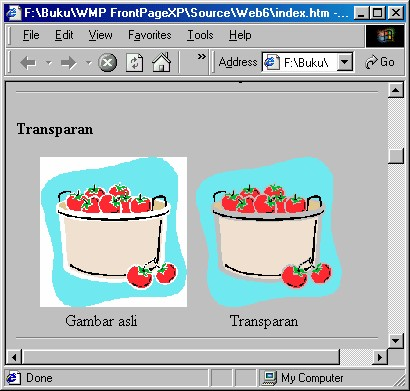
Gambar 7.30 Penerapan transparan pada warna putih
Anda hanya bisa mengubah gambar dengan format GIF saja. Kalau Anda
menerapkan perintah ke format lain, maka FrontPage XP akan mengubah gambar
tersebut menjadi GIF, selanjutnya akan membuatnya transparan.
4.3 Cropping, resizing dan restore
4.3.1 Cropping
Cropping adalah proses pemotongan bagian gambar. Yang digunakan adalah tombol
Crop (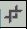 ). Dan cara pemakaiannya seperti berikut ini:
1. Klik gambar yang akan di-crop. Toolbar Pictures tampil.
2. Klik tombol Crop, lalu klik dan drag bagian gambar yang Anda inginkan.
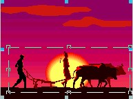
Gambar 7.31 Pemilihan area cropping
3. Kemudian tekan Enter, area yang tidak terlingkupi, yaitu yang tidak Anda pilih
akan dihapus.
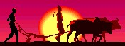
Gambar 7.32 Hasil cropping
4.3.2 Resizing
Yang dimaksud resizing adalah pengubahan ukuran gambar. Anda bisa secara
melakukan langsung pada gambar, yaitu dengan klik gambar lalu drag handle ke
arah luar untuk memperbesar atau ke arah dalam untuk memperkecil.
Selain cara langsung tersebut, tentu saja Anda bisa memanfaatkan kotak dialog
Picture Properties tab Appearance, lalu pada kotak Width dan Height tuliskan
ukuran yang Anda iginkan. Kotak dialog ini bisa Anda panggil dengan klik kanan
gambar lalu klik Picture Properties.
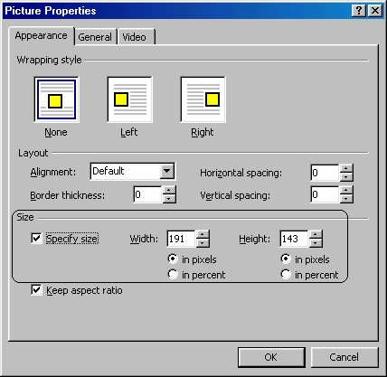
Gambar 7.33 Kotak dialog Picture Properties
4.3.3 Restore
Setelah Anda melakukan Cropping atau resizing, Anda masih bisa mengembalikan
ke keadaan asli gambar dengan klik tombol Restore (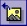 ).
4.4 Hitam putih dan washout
Gambar berwarna yang terpasang pada halaman bisa Anda ubah menjadi hitam putih
dengan tombol Color (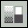 ), lalu memilih Grayscale .
Selain memilih Grayscale Anda juga bisa memilih perintah washout agar gambar
berubah menjadi berkabut. Hal ini bisa kita manfaatkan untuk membuat gambar latar
belakang.
4.5 Membuat teks pada gambar
Bagian terakhir pengaturan tampilan adalah menambah teks ke gambar. Langkah
yang diperlukan adalah:
1. Klik gambar yang Anda inginkan.
2. Klik tombol Text ( 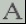), muncul penampung teks di gambar.
3. Tuliskan teks yang Anda inginkan.
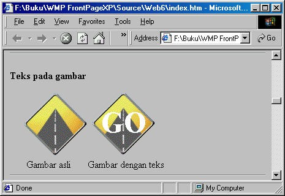
Gambar 7.34 Teks pada gambar
Copyright © Herlan Lesmana
Created with the Freeware Edition of HelpNDoc: Easily create Help documents